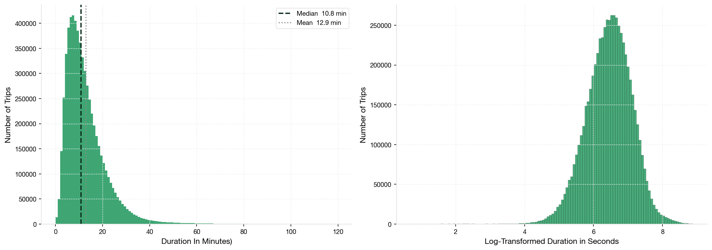
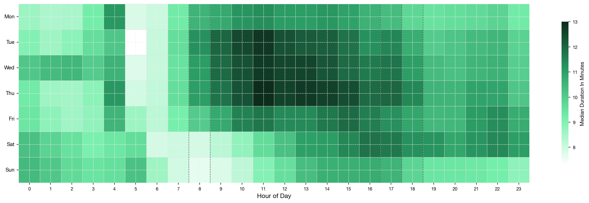
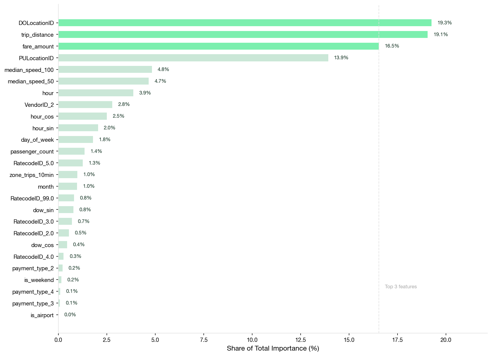
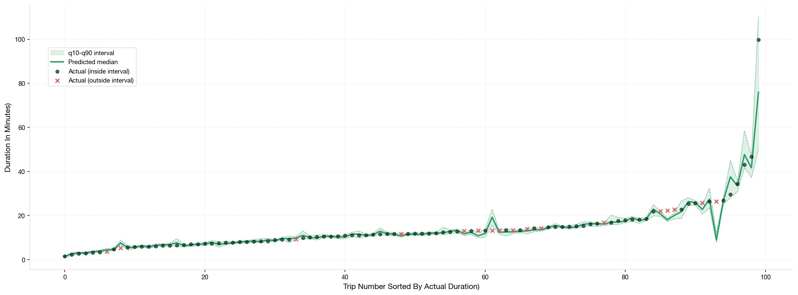

A LightGBM quantile regression model trained on 10 million Manhattan taxi trips, producing calibrated duration intervals instead of just a single estimate.
Every decision was made to reflect what a real ETA system would need to know at the moment of pickup, before the trip begins.
I used the NYC Taxi and Limousine Commission (TLC) Yellow Taxi trip records for January through March 2025, a publicly available dataset with over 11 million rows covering every yellow cab trip in New York City during that period.
I filtered to Manhattan pickups only, because Manhattan is by far the busiest part of New York City and yellow cabs dominate there. This made the dataset analytically coherent and meant every zone had enough trip volume for the model to learn from.
I also used a second dataset from the same TLC website — a Taxi Zone lookup table — to map the numeric location IDs in the trip records to actual neighborhood names and borough classifications.
I removed rows with missing values and filtered out physically impossible records. This included trips with negative or zero fares (for example, some rows in the dataset had a fare of −$4.75, which makes no sense) as well as zero-distance trips, durations under a second or over two hours, and records outside the January to March 2025 window.
I also dropped columns that are only known after the trip ends and would therefore never be available at prediction time — things like surcharges, toll amounts, and tip amounts. Keeping these would have made the model cheat :)
I calculated trip duration by subtracting the pickup timestamp from the dropoff timestamp, then calculated speed in miles per hour using that duration and the trip distance. From there, I built rolling congestion proxies: for each new trip, I looked at the last 50 and last 100 completed trips that started in the same pickup zone and computed the median speed of those past trips. This gives the model a lightweight signal about how fast traffic is moving in that area right now (without leaking any information from the current trip).
For time features, I used cyclical sine and cosine encoding. This matters because a plain numeric hour column treats 11pm and midnight as far apart, when in reality they are just one hour away from each other. Cyclical encoding wraps the scale so the model understands this. I also extracted hour of day, day of week, weekend flag, and month.
After feature engineering, I removed the speed column and the dropoff timestamp before passing anything to the model. Leaving speed in would mean the model learns that speed times time equals distance, basic algebra, not a real pattern. And the dropoff timestamp directly encodes the answer we are trying to predict, so both had to go.
Before training, I checked the distribution of trip durations. The raw data had a skewness of 2.49, which can also be seein in Figure 1 below as a right tail driven by rare slow or unusual trips. I log-transformed the target to bring this close to zero, so the model could treat prediction errors proportionally rather than being dominated by outliers.
I also visualized median trip duration by hour of day and day of week. The heatmap clearly shows that trips take longest during daytime working hours on weekdays, and that the early morning hours are short because there is almost no congestion. This confirmed that time features would be genuinely predictive before any model was trained.


I split the data into 80% training and 20% test sets before doing any encoding. This order matters: the pickup and dropoff zone IDs were target-encoded by replacing each zone with its mean trip duration, but that mean was computed only on the training set. Doing it before the split would have let test-set information leak into the training process.
Low-cardinality categorical variables like vendor ID, rate code, and payment type were one-hot encoded. The result was a fully numeric feature matrix ready for model training.
Rather than predicting a single trip duration, I trained three separate LightGBM models: one for the 10th percentile (optimistic estimate), one for the 50th percentile (median), and one for the 90th percentile (pessimistic estimate). Together these three outputs form a calibrated prediction interval: for any given trip, the model says "this will most likely take between X and Y minutes."
This is more useful than a single number because real ETAs need to communicate uncertainty. A model that says "14 minutes" is less informative than one that says "between 11 and 16 minutes, most likely 14." The target was log-transformed before training and inverse-transformed after prediction to convert outputs back to seconds.
The model produces tight, honest predictions. Hover over any card to understand what the number actually means.


Limitations: this model was trained on actual measured trip distance and fare values recorded by the taximeter. In a real deployment, those values would likely be pre-trip estimates with their own margin of error or unknown completely. Real-world prediction accuracy would therefore be slightly lower than what the metrics above show.